← Back to Projects
06 • Residential + Community
Maple Courtyard Homes
A crafted residential community shaped by seasons, privacy and shared courtyards.
COMMUNITY THROUGH SEASONS
Design Narrative
Community is built in the threshold between private homes and shared seasonal landscape.
The project makes the shared court the centre of value: a threshold between individual privacy and neighbourly life, shaped by autumn landscape, brick, limestone and timber.
Courtyard as social heart, seasonal landscape, human scale and warm materiality.
12 courtyard homesTypical plot 350–480 sqmBuilt-up area 285–340 sqm4 bedrooms2 covered spacesSeasonal planting
Strategic Lens — Seasonal Community Value
How can twelve townhomes feel individual, connected and grounded in Toronto’s seasonal character?
Make the courtyard the social heart and seasonal landscape the identity layer.
Brick, limestone, timber, layered thresholds and shared courts create a warm human-scale address.
A sequence of intimate courts and planted thresholds changes character with the seasons.
Shared landscape gives repeated homes a collective identity while protecting domestic privacy.
Curated Visual Gallery
Maple Courtyard Homes
A visual sequence of architecture, atmosphere, movement and detail.
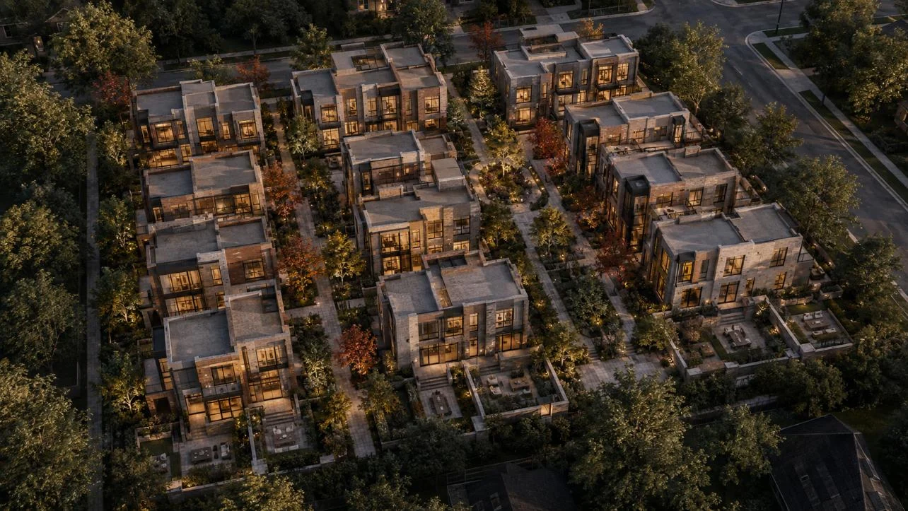
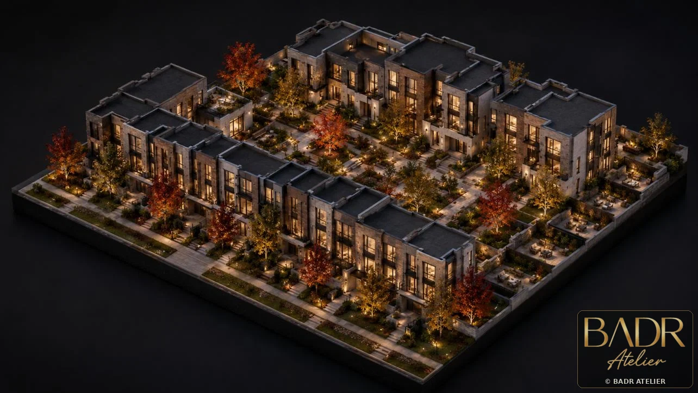
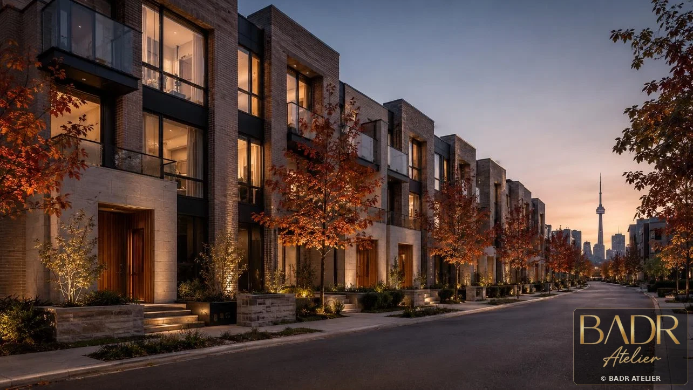
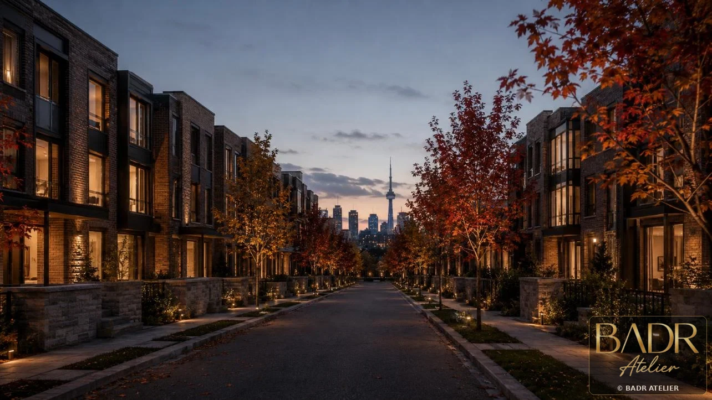
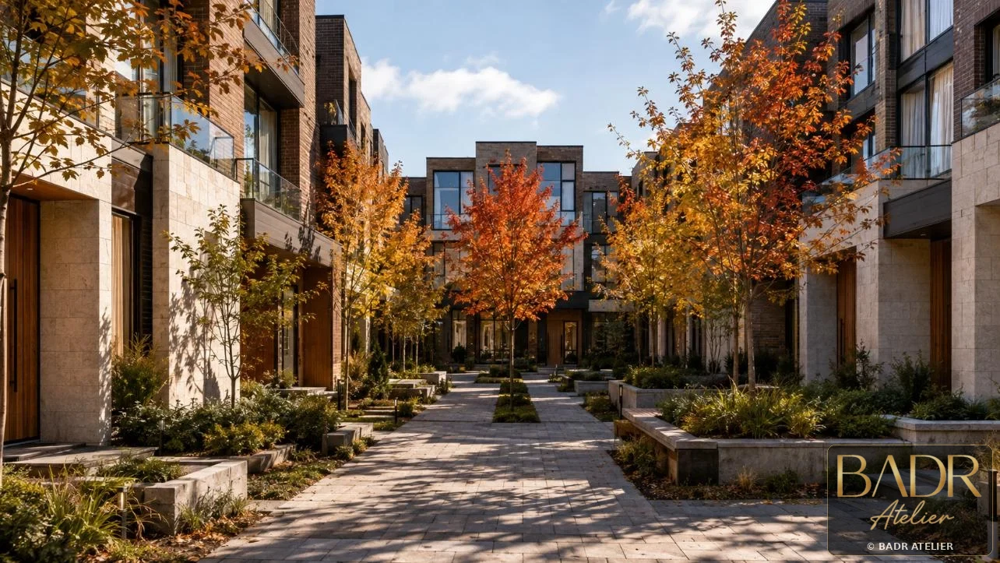
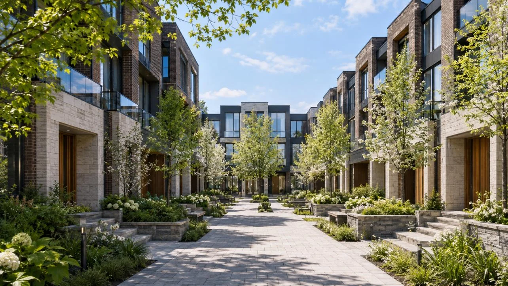
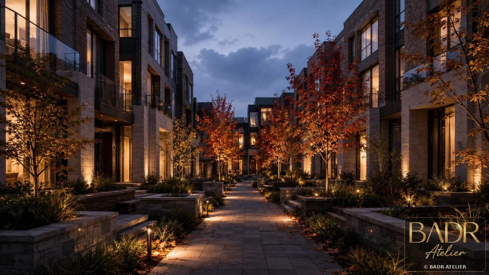
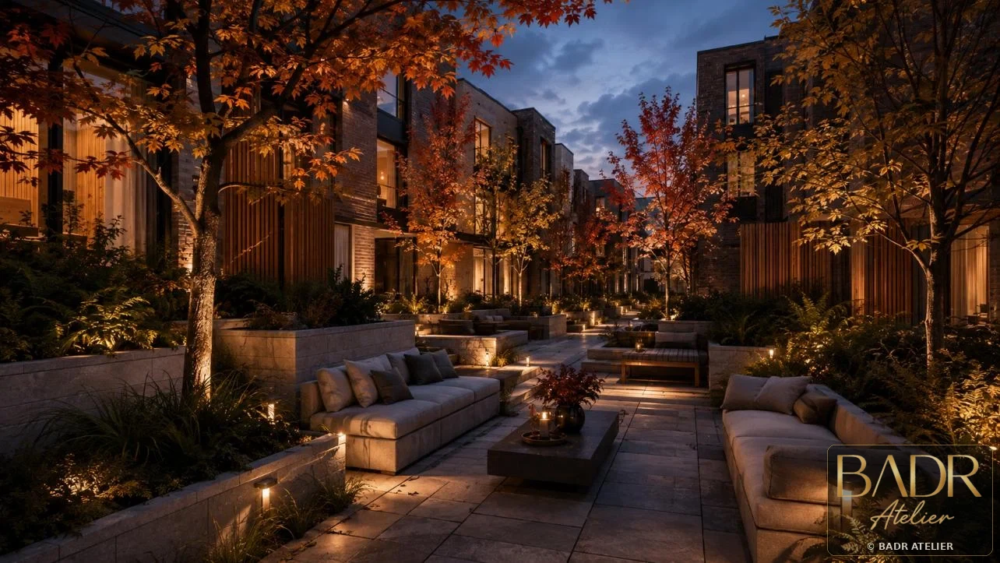
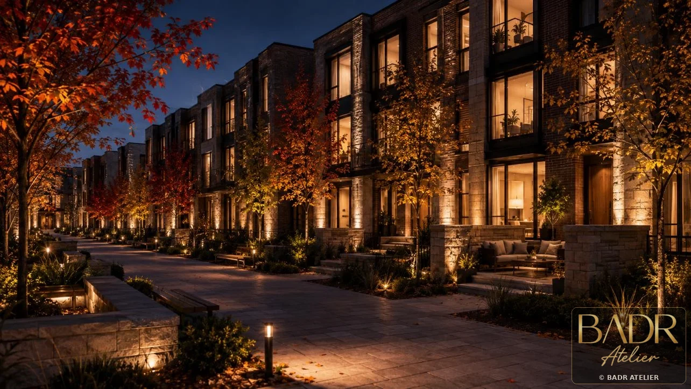
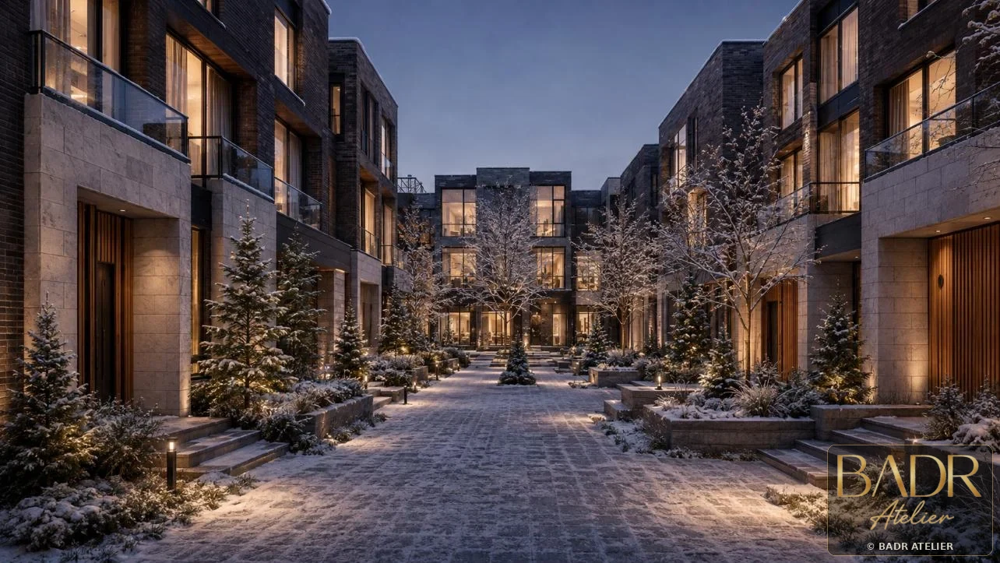
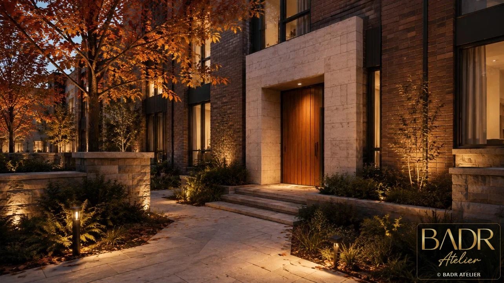
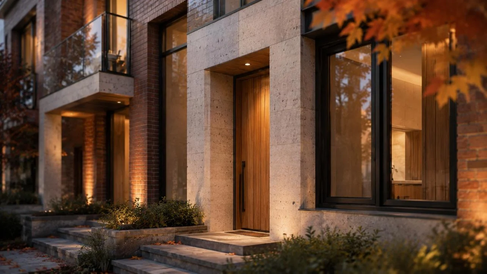
Key Features
- 12 courtyard homes
- Typical plot 350–480 sqm
- Built-up area 285–340 sqm
- 4 bedrooms
- 2 covered spaces
- Seasonal planting
- Layered privacy
Spaces + Experiences
- Shared courtyards
- Townhouse entries
- Private patios
- Family living spaces
- Parking courts
- Seasonal landscape